Sound design
FM synthesis and algorithms
Six operators shape both loudness and changing harmonic content.
An operator is an oscillator with its own envelope. A carrier reaches the output; a modulator changes another operator's phase and therefore its spectrum. Increasing a carrier level mainly changes loudness. Increasing a modulator level can dramatically brighten or roughen the tone. Output level is logarithmic, not a linear percentage.
The algorithm chooses the routing among six operators. The diagram shows the actual operator connections and carriers. Unsupported feedback routing is identified rather than silently advertised as working. Algorithm is saved per instrument; editing the active sound does not rewrite the other bank entries. The display uses human-friendly algorithms 1–32 while the canonical value is 0–31.
FM EDIT selects an operator with SELECT on its first six pages. TUNE holds output level, coarse/fine frequency and detune. SENSITIVITY holds amplitude/velocity sensitivity, ratio/fixed mode and rate scaling. KEY SCALE and CURVE change level across the keyboard. OP RATES and OP LEVELS expose all four envelope stages. PITCH RATES and PITCH LEVELS affect the whole FM voice.
Ratio mode follows the played note; coarse zero is a half ratio. Fixed mode produces a frequency independent of keyboard pitch. Detune is centered at raw 7. Four envelope rates control speeds toward four levels; rate 99 is fastest. Level 3 is held until release, then rate 4 approaches level 4. A silent release normally uses level 4 equal to zero.
Build a brassy attack
- Choose a routing with a modulator feeding a carrier.
- Raise that modulator's output while playing a comfortable middle register.
- Give its first envelope level a strong peak, then reduce the held level. This makes the attack brighter than the sustain.
- Increase velocity sensitivity for dynamic attacks; adjust the carrier separately for audible level.
- Compare soft and hard notes, low and high registers, then save the instrument.
FM ENV is a quick carrier-envelope view. Use EDIT for independent operator timbre envelopes. FMER is not certified as an exact DX7 emulator; the limitations remain relevant when comparing classic patches.


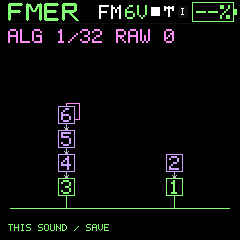

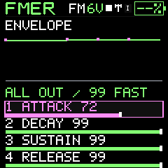
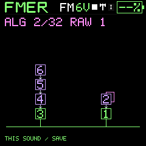
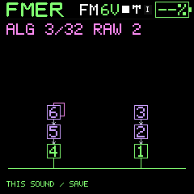
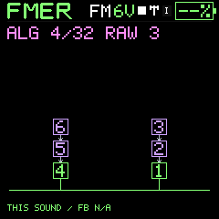
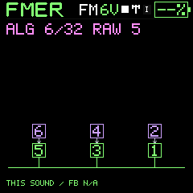
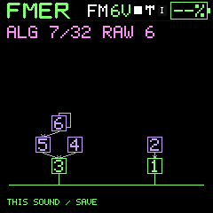
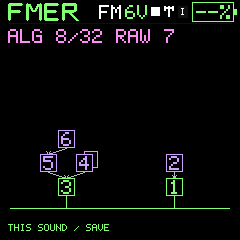
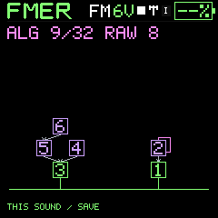
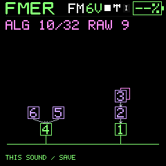
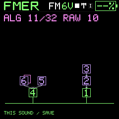
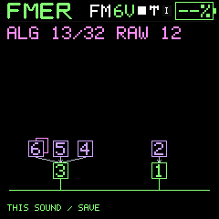
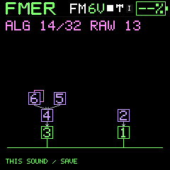
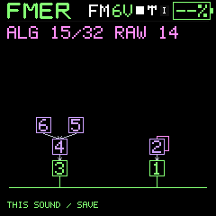
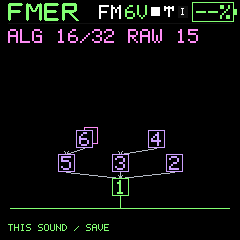
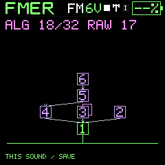
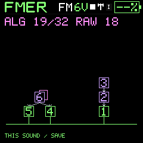
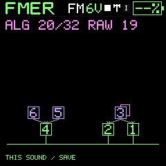
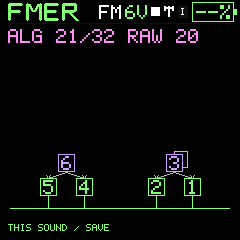
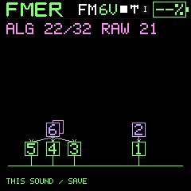
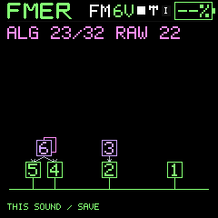
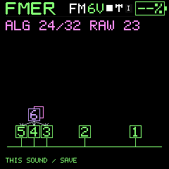
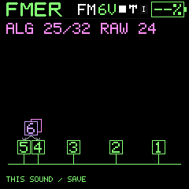
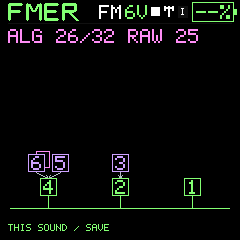
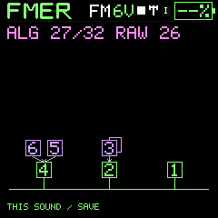
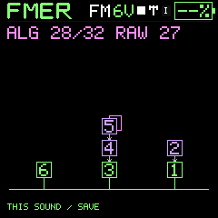
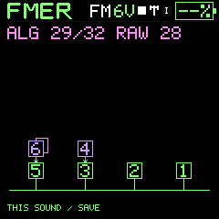
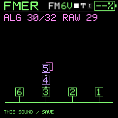
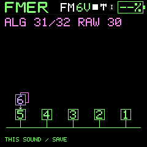
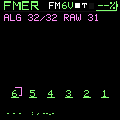
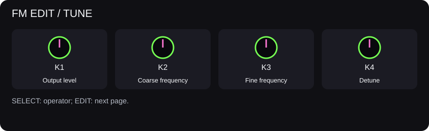
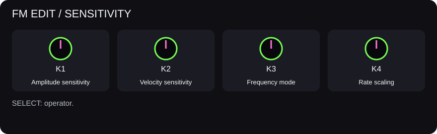
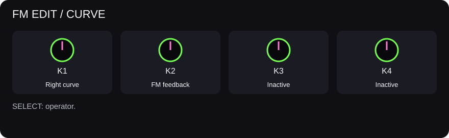
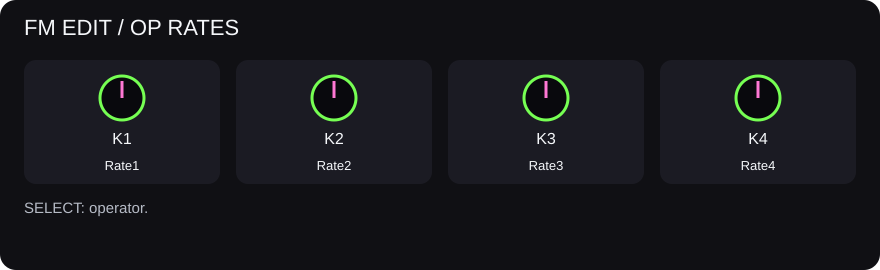
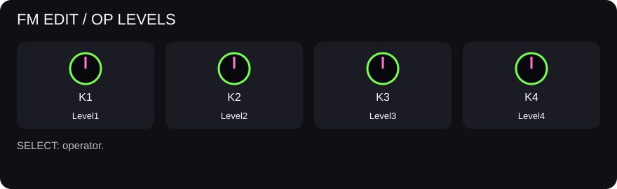
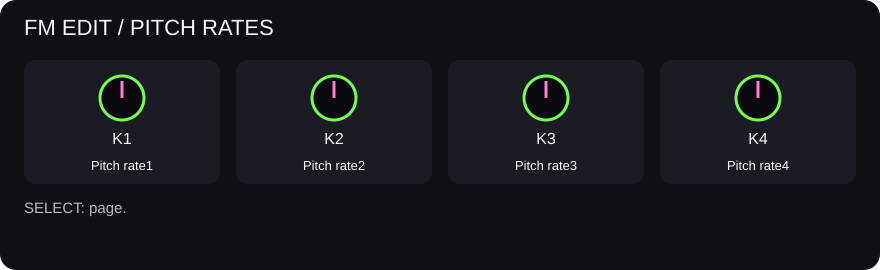
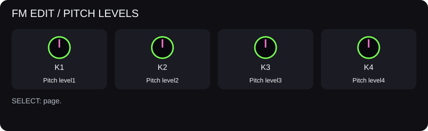